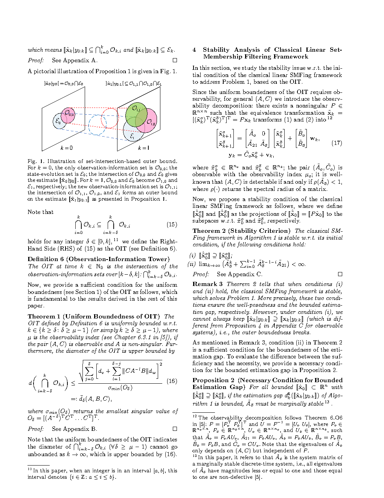
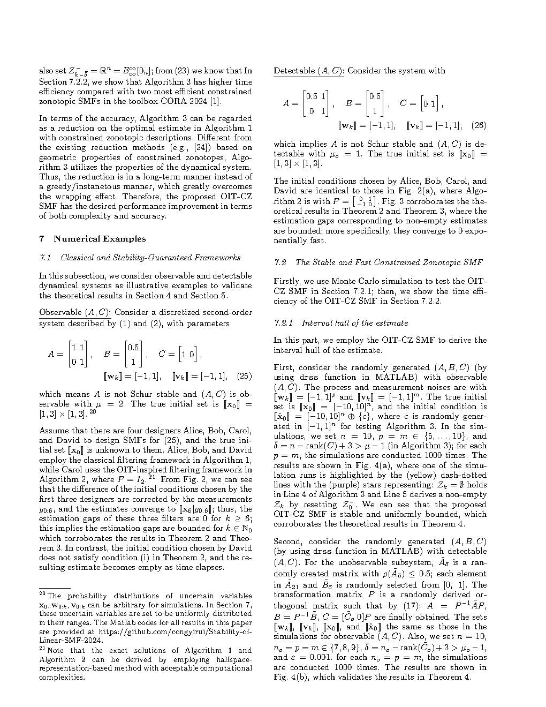
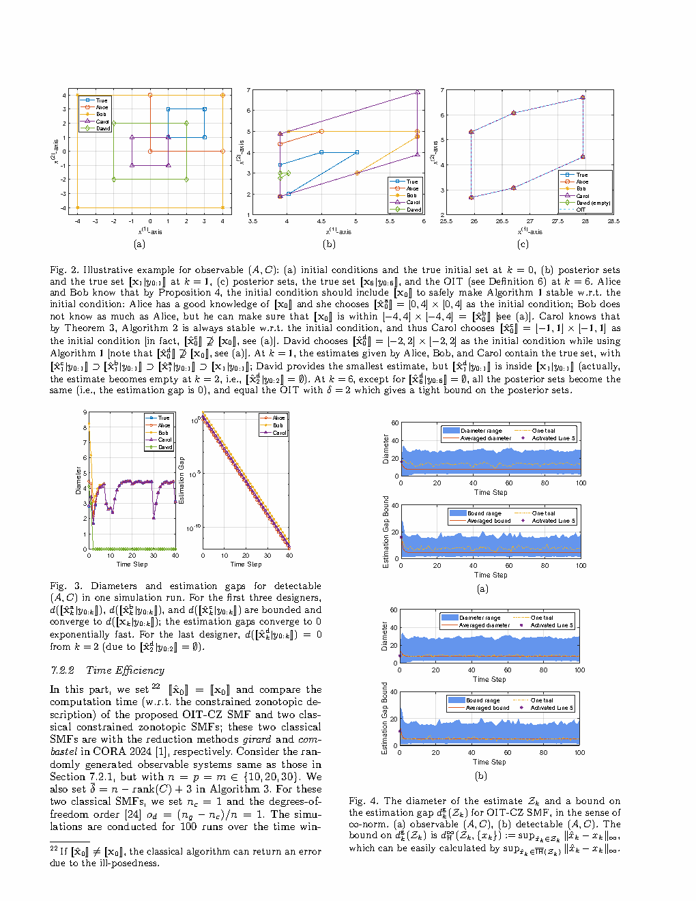

| Title | Stability of Linear Set-Membership Filters With Respect to Initial Conditions: An Observation-Information Perspective（线性集合成员滤波器对初始条件的稳定性：观测信息视角） |
| Authors | Yirui Cong（从一芮）、Xiangke Wang（王祥科）、Xiangyun Zhou |
| Affiliation | 国防科技大学（NUDT），智能科学学院 |
| Venue | arXiv preprint，2024-03-14（Submitted to a journal） |
| DOI / Links | arXiv:2203.13966 | First posted: 2022-03-25 | Latest revision: 2024-03-14 |
| TL;DR | 提出观测信息塔（Observation-Information Tower, OIT）这一新概念，将测量序列对状态的约束从初始集合中解耦出来，首次给出了经典线性集合成员滤波器（SMF）对初始条件稳定性的充要条件，并基于 OIT 设计了一种稳定保证的约束 zonotope SMF 算法（OIT-CZ），显著克服了包裹效应（wrapping effect）。 |
| Inspiration Source | → What Insight It Inspired | Type |
|---|---|---|
| Kalman 滤波的可观测性 Gramian — 刻画了测量序列在最小二乘意义下提供了多少"信息" | → 类似地，SMF 也需要一种不依赖初始条件的"信息度量"——但 Gramian 是矩阵（二次型），SMF 需要的是集合。OIT 就是集合版本的 Gramian：一段测量序列反向传播后形成的交集集合，其有界性等价于可观测性在集合成员框架中的体现 | 架构 |
| 集合论中的交集操作 — 每增加一个约束，可行域就缩小（或保持不变） | → 将 L+1 个测量一致集合全部"拉回"到同一时刻求交集——形成了一座"信息塔"。塔越高（窗口越长），约束越多，OIT 可能越小（越精确）。OIT 的构造本质上是在做"时间对齐后的约束累积" | 方法 |
| 约束 Zonotope（Constrained Zonotope）— 比普通 zonotope 更强的表达能力，可精确表示任意凸多面体 | → 将 OIT 用约束 zonotope 表示，Minkowski 和、线性变换、交集均有闭式运算，克服了传统多面体表示在集合传播中的"包裹效应"——这是将 OIT 从理论工具变为可用算法的关键桥梁 | 数学 / 计算 |
| 经典 SMF 的信息论困境 — 没有概率分布，没有似然函数，无法定义"信息增益" | → OIT 给出了一种"信息"的几何定义：信息 = 交集约束对状态集合的缩小程度。信息不是标量而是集合形状的变化——这是对"信息"概念在无概率框架下的一个根本性拓展 | 策略 |
flowchart TB
subgraph SYSTEM["系统层: LTI 离散时间系统"]
DYN["动力学: x_k = A x_{k-1} + w_{k-1}"]
MEAS["测量: y_k = C x_k + v_k"]
NOISE["噪声: w_k ∈ W, v_k ∈ V (有界凸多面体)"]
end
subgraph CLASSICAL["经典 SMF 递归"]
PRED["预测: X_{k|k-1} = A X_{k-1} ⊕ W"]
XYK["测量一致集: X_{y_k} = {x : y_k - Cx ∈ V}"]
CORR["校正: X_k = X_{k|k-1} ∩ X_{y_k}"]
end
subgraph OIT["OIT 构造 (核心创新)"]
BACK["反向传播: 将 X_{y_{k-L+i}} 通过 A^{-i} 拉回 k-L 时刻"]
COMP["过程噪声补偿: ⊕(-⊕_{j=0}^{i-1} A^{i-1-j}W)"]
TOWER["OIT_{k-L} = ∩_{i=0}^{L} A^{-i}(X_{y_{k-L+i}} ⊕ (-⊕_{j=0}^{i-1} A^{i-1-j}W))"]
end
subgraph STABILITY["稳定性分析"]
CHECK{"OIT well-defined?
(非空且有界)"}
YES["✅ 经典 SMF 对初值稳定"]
NO["❌ 经典 SMF 对初值不稳定"]
end
subgraph ALGO["OIT-CZ 算法实现"]
CZREP["约束 Zonotope 表示
Z = ⟨c, G, A, b⟩_CZ"]
OPRS["闭式运算: Minkowski和 · 线性变换 · 交集"]
RESET["OIT 定期重置 → 克服包裹效应"]
end
DYN --> PRED
MEAS --> XYK
NOISE --> PRED
NOISE --> XYK
PRED --> CORR
XYK --> CORR
XYK --> BACK
BACK --> COMP --> TOWER
TOWER --> CHECK
CHECK -->|"充要条件"| YES
CHECK -->|"充要条件"| NO
TOWER --> CZREP --> OPRS --> RESET
YES -.->|"理论保证"| RESET
classDef sys fill:#fef7ed,stroke:#f59e0b,stroke-width:2px,color:#92400e
classDef cla fill:#e8f0fe,stroke:#3b82f6,stroke-width:2px,color:#1d4ed8
classDef oit fill:#f0ebfd,stroke:#8b5cf6,stroke-width:2px,color:#6d28d9
classDef sta fill:#e6f7ee,stroke:#10b981,stroke-width:2px,color:#047857
classDef alg fill:#ffe4e6,stroke:#f43f5e,stroke-width:2px,color:#be123c
class DYN,MEAS,NOISE sys
class PRED,XYK,CORR cla
class BACK,COMP,TOWER oit
class CHECK,YES,NO sta
class CZREP,OPRS,RESET alg
flowchart TB
subgraph MEAS_SEQ["测量序列: k-L 到 k 时刻"]
Y0["y_{k-L}"]
Y1["y_{k-L+1}"]
Y2["..."]
YL["y_k"]
end
subgraph CONSTRAINTS["每步的测量一致集合"]
XY0["X_{y_{k-L}}: x满足 y_{k-L} - Cx ∈ V"]
XY1["X_{y_{k-L+1}}: x满足 y_{k-L+1} - Cx ∈ V"]
XYL["X_{y_k}: x满足 y_k - Cx ∈ V"]
end
subgraph BACKPROP["反向传播到 k-L 时刻"]
BP0["直接使用: X_{y_{k-L}}"]
BP1["拉回1步: A^{-1}(X_{y_{k-L+1}} ⊕ (-W))"]
BP2["拉回2步: A^{-2}(X_{y_{k-L+2}} ⊕ (-AW ⊕ -W))"]
BPL["拉回L步: A^{-L}(X_{y_k} ⊕ (-⊕_{j=0}^{L-1} A^{L-1-j}W))"]
end
subgraph OIT_RESULT["OIT: 所有约束的交集"]
INTERSECTION["OIT_{k-L}(L+1) = BP0 ∩ BP1 ∩ BP2 ∩ ... ∩ BPL"]
PROPERTY["✅ 与 X_0 无关 ✅ 仅由测量+噪声边界决定"]
SHAPE["若良定 → 有界非空集合 → 滤波器稳定锚点"]
end
Y0 --> XY0 --> BP0
Y1 --> XY1 --> BP1
YL --> XYL --> BPL
XY0 --> BP0
BP0 --> INTERSECTION
BP1 --> INTERSECTION
BP2 --> INTERSECTION
BPL --> INTERSECTION
INTERSECTION --> PROPERTY --> SHAPE
classDef meas fill:#e8f0fe,stroke:#3b82f6,stroke-width:2px,color:#1d4ed8
classDef cons fill:#fef7ed,stroke:#f59e0b,stroke-width:2px,color:#92400e
classDef back fill:#f0ebfd,stroke:#8b5cf6,stroke-width:2px,color:#6d28d9
classDef resu fill:#e6f7ee,stroke:#10b981,stroke-width:2px,color:#047857
class Y0,Y1,Y2,YL meas
class XY0,XY1,XYL cons
class BP0,BP1,BP2,BPL back
class INTERSECTION,PROPERTY,SHAPE resu
flowchart TD
subgraph INIT["阶段1: 初始化"]
I1["设定系统矩阵 A, C, 噪声边界 W, V"]
I2["选择 OIT 窗口长度 L+1"]
I3["初始化约束 zonotope: X_0 = ⟨c_0, G_0, A_0, b_0⟩_CZ"]
end
subgraph FORWARD["阶段2: 前向滤波 (约束 zonotope 运算)"]
F1["预测: X_{k|k-1} = A X_{k-1} ⊕ W
(CZ的Minkowski和: 闭式)"]
F2["测量一致集: X_{y_k} = {x : y_k - Cx ∈ V}
(CZ的条带交集: 闭式)"]
F3["校正: X_k = X_{k|k-1} ∩ X_{y_k}
(CZ交集: 增广约束矩阵)"]
end
subgraph OIT_BUILD["阶段3: OIT 构建与检查"]
O1["缓存最近 L+1 步的测量一致集 X_{y_i}"]
O2["反向传播每个 X_{y_i} 到参考时刻
(线性变换 + Minkowski和补偿)"]
O3["取所有反向传播集合的交集 → OIT"]
O4{"OIT 是否 well-defined?
(非空且半径 < ∞)"}
end
subgraph RESET["阶段4: OIT 重置 (稳定保证)"]
R1["用 OIT 替换当前估计集
X_reset = OIT (作为新的初始约束)"]
R2["从 X_reset 继续前向滤波"]
R3["✅ 消除累积的包裹效应
✅ 误差上界由 OIT 大小保证"]
end
INIT --> FORWARD
FORWARD --> OIT_BUILD
O1 --> O2 --> O3 --> O4
O4 -->|"YES"| RESET
O4 -->|"NO"| FORWARD
RESET --> FORWARD
classDef init fill:#fef7ed,stroke:#f59e0b,stroke-width:2px,color:#92400e
classDef fwd fill:#e8f0fe,stroke:#3b82f6,stroke-width:2px,color:#1d4ed8
classDef build fill:#f0ebfd,stroke:#8b5cf6,stroke-width:2px,color:#6d28d9
classDef reset fill:#e6f7ee,stroke:#10b981,stroke-width:2px,color:#047857
class I1,I2,I3 init
class F1,F2,F3 fwd
class O1,O2,O3,O4 build
class R1,R2,R3 reset
| 类别 | 内容 | 数学描述 |
|---|---|---|
| 输入 | 系统矩阵 $A, C$；噪声多面体 $W, V$；测量序列 $\{y_k\}$；初始集 $X_0$（可能任意大） | $A \in \mathbb{R}^{n\times n}$, $C \in \mathbb{R}^{p\times n}$, $W \subset \mathbb{R}^n$, $V \subset \mathbb{R}^p$ |
| 输出 | 状态估计集 $\hat{X}_k$（保证包含真实状态 $x_k$）；稳定性条件判断 | $\hat{X}_k \subset \mathbb{R}^n$, $x_k \in \hat{X}_k$（有保证） |
| 目标 | $\hat{X}_k$ 非空有界（良定性）+ 不同 $X_0$ 下的估计集 Hausdorff 距离有界且收敛（估计间隙有界） | $d_H(\hat{X}_k^{(1)}, \hat{X}_k^{(2)})$ 有界，且 $\limsup_{k\to\infty}$ 有限 |
这是一个理论分析 + 算法设计双重任务。理论层面：首次为经典线性 SMF 提供对初始条件稳定性的严格充要条件——填补了 SMF 理论的一个根本性空白。算法层面：利用约束 zonotope 的代数结构，将 OIT 从一个理论构造转化为可高效计算的滤波算法（OIT-CZ），解决了长期困扰 SMF 实现的包裹效应问题。该工作横跨集合论、线性系统理论、凸几何、计算几何四个领域，是少有的"从理论到算法完整闭环"的工作。
⚠ 表头用英文，正文用中文
| Prior Method | Core Idea | Why It Fails for SMF Stability |
|---|---|---|
| Kalman Filter Stability Theory（Kalman 滤波稳定性理论） | 通过 Riccati 方程分析误差协方差矩阵的收敛性：一致完全可观测 + 一致完全可控 → $P_k$ 有界 → 滤波稳定 | SMF 中没有协方差矩阵——没有 Riccati 方程，没有 Gramian 矩阵。稳定性的本质不是"方差收敛"而是"估计集的大小和位置不再受初始集显著影响"——这是一个集合几何问题，不是协方差问题。 |
| Ellipsoidal SMF（椭球集合成员滤波） | 用椭球 E(c, P) = {x : (x-c)^T P^{-1} (x-c) \le 1} 近似可行集，传播椭球参数 (c, P) | 椭球是对可行集的保守近似——真实可行集可能是多面体，但椭球强制用一个对称凸体包裹。这种保守性在迭代中累积：椭球 SMF 的"稳定性"结论反映的是近似精度，而非经典 SMF 框架本身的稳定性。且椭球形状固定，无法精确捕获多面体约束。 |
| Interval Analysis / Interval SMF（区间分析 SMF） | 用轴对齐的区间盒子 [\underline{x}, \overline{x}] 表示集合，传播上下界 | 区间表示极度保守——无法表示集合间的相关性（dependency problem），每一步的 Minkowski 和会引入巨大的过近似。包裹效应在此方法中尤为严重：估计集随步数迅速膨胀到完全无用。 |
| Zonotopic SMF（普通 zonotope SMF） | 用 zonotope Z = c + G[-1,1]^p 表示集合，Minkowski 和为生成矩阵拼接，线性变换为矩阵乘法 | 普通 zonotope 无法精确表示交集——交集操作只能通过过近似实现（将交集外包为一个 zonotope）。这意味着测量校正步骤本身就引入了误差。此外，普通 zonotope 也无法表示任意凸多面体，只能表示中心对称的多面体。 |
本文的核心贡献是一个理论-算法双层架构。理论层：定义 OIT，基于 OIT 给出 SMF 稳定性的充要条件。算法层：用约束 zonotope 实现 OIT 的构造与滤波的稳定执行。以下将关键公式分为四个群组。
LaTeX rendered by MathJax. 显示公式用 $$...$$，行内公式用 $...$。⚠ 符号解释请用中文。
| 参数 | 含义 | 在本文中的作用 | 选择依据 |
|---|---|---|---|
| OIT 窗口长度 $L+1$ | 构建 OIT 所使用的测量个数 | 决定 OIT 的"约束丰富度"——窗口越长，堆叠的约束越多，OIT 可能越紧致 | $L$ 必须足够大使 OIT 良定——至少需要达到系统的可观测性指数。但 $L$ 过大增加计算负担。理论上存在一个最小 $L^*$ 使得 OIT 首次良定 |
| 噪声多面体 $W, V$ 的形状和大小 | 过程噪声和测量噪声的已知有界范围 | 决定 OIT 的"松弛度"——$W, V$ 越大，OIT 越大（约束越弱） | 由物理系统的传感器精度和执行器不确定性决定。假设 $W, V$ 已知且时不变——这是本文的限定条件 |
| 约束 zonotope 的生成因子数 $p$ | $G$ 矩阵的列数——决定 zonotope 的"自由度" | $p$ 越大 → 表示精度越高 → 计算复杂度 $O(np^2)$ 越高 | 在表示精度和计算效率之间权衡：典型应用中 $p$ 在 10~100 范围内 |
| 估计间隙的 Hausdorff 上界 | $d_H(\hat{X}_k^{(1)}, \hat{X}_k^{(2)})$ 的渐近值 | 刻画不同初值对估计影响的最大程度 | 理论上该上界由 OIT 的大小决定——OIT 越小（测量越精确），间隙上界越小。这是 OIT 重置框架的直接推论 |
| 重置周期 | 两次 OIT 重置之间的步数间隔 | 决定包裹效应的累积程度——周期性重置阻止了过近似误差的无限增长 | 大于等于 OIT 良定所需的最小窗口 $L^*$，小于包裹效应开始显著劣化估计的步数 |
理解本文需要掌握四个层层递进的基础原理：(1) 集合交集作为信息累积，(2) 反向传播将测量"对齐"到同一时刻，(3) 约束 zonotope 的计算优越性，(4) 包裹效应的本质与 OIT 的解决策略。
为什么 OIT 需要"塔"的结构？ 单步的测量一致集 $X_{y_k}$ 是一个无界条带（strip，当 C 不是方阵时，条带有 n-rank(C) 个无界方向）。单步测量只约束了状态空间的一部分方向。只有当你在多个时间步上累积测量约束，并将它们通过动力学关系"对齐"到同一时刻，不同方向的约束才会联合锁定状态——这就是"塔"的直觉：每一层测量贡献一些方向的约束，堆叠起来才能形成有界的交集。
📷 论文原图截图。图片保存至 figures/ 子目录。命名 fig1.png ~ fig3.png 即可自动显示。

📷 请将截图保存为figures/fig1.png本图预期展示：OIT 构造过程的几何可视化。以 2D 状态空间为例，展示 (a) 三个连续时刻的测量一致集 X_{y_1}, X_{y_2}, X_{y_3} 在各自时刻的几何形态（每个是一个条带——沿某些方向无界）。这些条带被反向传播到同一参考时刻，在反向传播过程中条带的方向和位置通过动力学矩阵 A 变换，并补偿了过程噪声 W 的扩张效应。三个反向传播后的集合在参考时刻取交集，形成一个有界的多边形——这就是 OIT。

📷 请将截图保存为figures/fig2.png本图预期展示：(a) 选取两个差异极大的初始集 X_0^{(1)} 和 X_0^{(2)}（例如一个非常小、一个非常大——模拟"不当初始集"场景），分别运行经典 SMF 和 OIT-SMF。(b) 绘制两对估计集之间的 Hausdorff 距离 $d_H(\hat{X}_k^{(1)}, \hat{X}_k^{(2)})$ 随 k 的变化曲线。(c) 对于经典 SMF，Hausdorff 距离可能持续很大或不收敛——说明初始集的影响持续存在（不稳定）。(d) 对于 OIT-SMF，在 OIT 良定后（k > L*），Hausdorff 距离迅速下降并保持在一个很小的有界值——说明初始集的影响已被"洗掉"。

📷 请将截图保存为figures/fig3.png本图预期展示：(a) 三种 SMF 实现——区间 SMF、普通 zonotope SMF、OIT-CZ（约束 zonotope SMF）——在同一系统上的估计集大小（diameter 或 volume）随 k 的变化。(b) 真实状态轨迹与各滤波器估计集的包含关系。(c) 计算时间 vs 估计精度的权衡曲线。(d) 当系统维度 n 增大时，各方法的可扩展性对比。
| 数据问题 | 潜在困难 | 严重程度 |
|---|---|---|
| 噪声边界 $W, V$ 的估计误差 | 如果真实噪声偶尔超出预设边界（离群测量），X_{y_k} 可能为空 → SMF 崩溃（无可行集）。需要鲁棒扩展（如允许小概率的集外测量，用集员概率框架） | ★★★★★ |
| 系统矩阵 A 的建模误差 | SMF 假设完美模型——如果实际 A 与模型有偏差，预测集的 Minkowski 和 +W 可能不足以覆盖模型误差，导致真实状态"掉出"估计集（丧失了包含性保证） | ★★★★ |
| OIT 窗口长度 L 选择不当 | 如果 L 小于系统可观测性指数，OIT 永远不良定 → 稳定性条件永远不满足 → OIT-SMF 退化为经典 SMF。L 过大则计算负担加重且引入不必要的保守性（噪声累积更多） | ★★★ |
| 约束 zonotope 降阶引入的保守性 | 降阶操作（如每 N 步将 G 矩阵的列缩减到固定数量）在节约计算量的同时引入了不可逆的信息丢失——这种"保守性"与包裹效应不同，是故意引入的。需要在保守性和计算效率之间做经验性权衡 | ★★★ |
| 参考文献 | 为什么重要 |
|---|---|
| Combastel (2015) — "Zonotopes and Kalman observers: Gain optimality under distinct uncertainty paradigms and robust convergence." Automatica 55, 265–273 | 将 zonotope 与 Kalman 观测器建立桥接——证明 zonotope 的"最优增益"在某些条件下退化为 Kalman 增益。这是概率框架和集合框架之间的一座重要桥梁，对理解 OIT 与 Kalman 理论的联系至关重要。 |
| Scott et al. (2016) — "Constrained zonotopes: A new tool for set-based estimation and fault detection." Automatica 69, 126–136 | 约束 zonotope 的原始提出论文——包含完整的运算定义、复杂度分析和降阶策略。本文的 OIT-CZ 算法直接建立在此工作的基础上。理解约束 zonotope 的全部潜力需要阅读这篇。 |
| Alamo et al. (2005) — "Guaranteed state estimation by zonotopes." Automatica 41(6), 1035–1043 | 普通 zonotope SMF 的奠基性工作——提出了 zonotope 的 Minkowski 和、线性变换的闭式公式，以及条带交集的外包近似。本文 OIT-CZ 克服的核心问题（交集过近似、包裹效应）都来自这篇工作的局限性。 |
| Combastel (2025) — "Functional sets in state estimation: A new perspective with restricted-complexity polytopes." (后续工作) | 同一作者的后续工作——将约束 zonotope 推广到更一般的"功能集合"框架，进一步提升了集合成员估计的精度和效率。代表了该方向的最新进展。 |